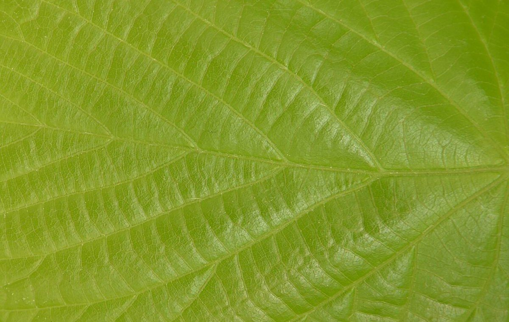
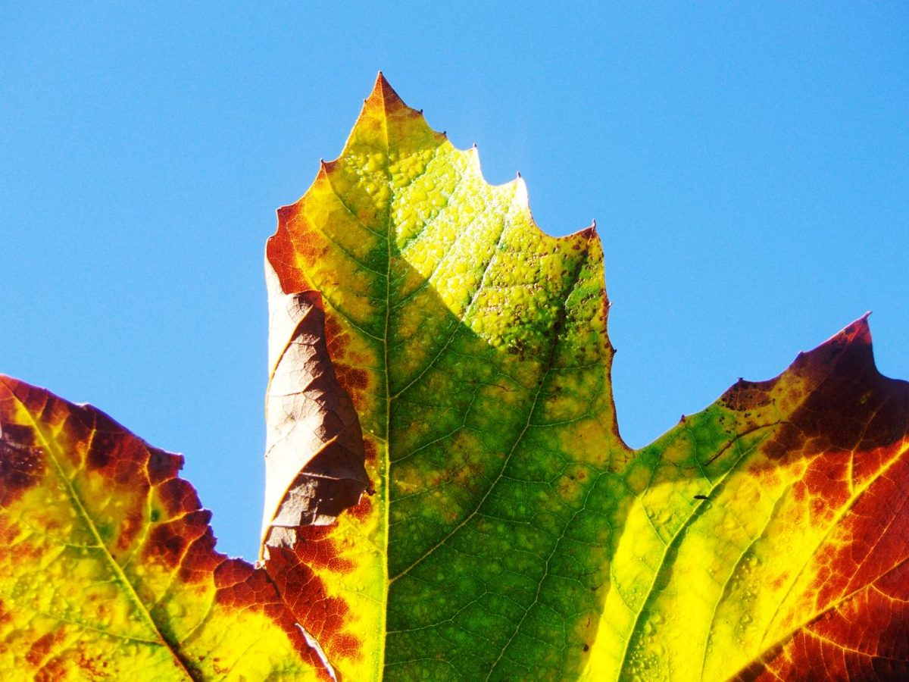

ワクラバコーヒー

制作側の連想
ひと葉だけ、先に秋
お店の由来は分かりません。制作側は「ワクラバ」という音から、夏のうちに一足早く色づいてしまう葉を「わくらば(病葉)」と呼ぶことを連想しました。そこでこのサイトは、1枚の葉が緑から黄、だいだい、赤、土色へ移りかわる5つの段階を、5ページに重ねた作りにしています。お店の理念・由来とは無関係の、制作側の連想です。

1枚の葉に緑・黄・赤が同居する写真です。刈谷市やお店の写真ではなく、撮影地不明のフリー素材のイメージです。

ご案内
お店のこと(確認できたものだけ)
| 所在地 | 〒448-0847 愛知県刈谷市宝町３丁目３ |
|---|---|
| 電話 | なし |
| 営業時間 | 準備中 |
| 定休日 | 準備中 |
| ご予約 | 準備中 |
| 駐車場 | 準備中 |
| SNS | Instagram @wakuraba_coffee |